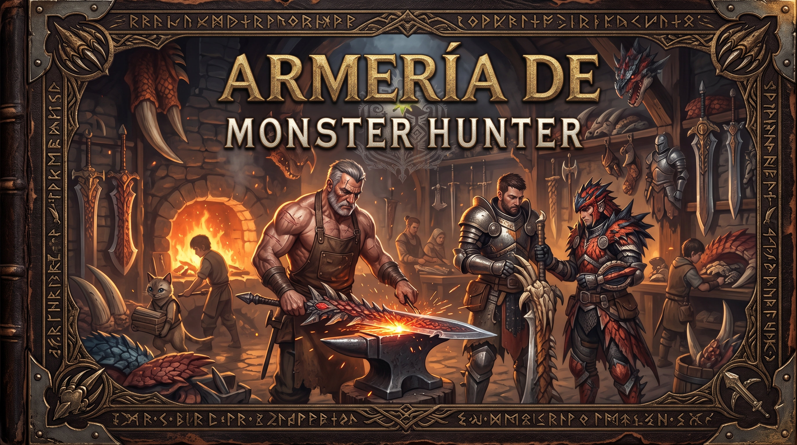

Corte Ligeras
Un conjunto versátil que permite combinar ataques y defensa, con buena movilidad para reaccionar.
Monster Hunter · Archivo del Gremio
MONSTER HUNTER CÓDICE
Biblioteca de fauna, equipo y expediciones
Tomo II · Herramientas de caza

El arma no hace al cazador por sí sola: conocer su alcance, ritmo y oportunidades es lo que permite dominarla.
Un conjunto versátil que permite combinar ataques y defensa, con buena movilidad para reaccionar.
Golpes lentos y contundentes. Premia la observación del monstruo y la elección del momento adecuado.
Un estilo fluido que encadena ataques y recompensa mantener el ritmo del combate.
Un arma contundente que permite presionar la cabeza de ciertos monstruos y buscar oportunidades de aturdimiento.
Permite atacar a distancia y gestionar la posición respecto al objetivo, prestando atención a la resistencia y la munición especial de cada juego.
Combina ataques con melodías de apoyo. Puede reforzar al cazador y al grupo si se administra bien.
Este catálogo es introductorio; las estadísticas, movimientos y nombres pueden variar entre entregas.